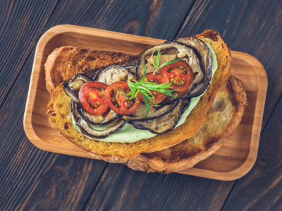

味覚を彩る、厳選の逸品
一杯一杯に込められた、職人の技と想い
local_cafeおすすめドリンク
VibeCording オリジナルブレンド
¥650(税込)
人気No.1
ブラジル、コロンビア、エチオピアの豆を絶妙にブレンド。 深いコクと上品な酸味のバランスが取れた、当店自慢のシグネチャーコーヒーです。
焙煎度
中深煎り
風味
チョコレート、ナッツ
おすすめ
朝食・デザートタイム
オリジナル
中深煎り
HOT/ICE
restaurantおすすめフード

アボカド & グリル野菜のオープンサンド
¥1,280(税込)
おすすめ
国産アボカドと季節のグリル野菜を、自家製全粒粉パンにのせた栄養満点のオープンサンド。 特製バジルソースとモッツァレラチーズが絶妙にマッチした一品です。
パン
自家製全粒粉パン
野菜
季節野菜（無農薬）
サイド
ミニサラダ付き
ヘルシー
野菜たっぷり
自家製パン
info
その他のメニューについて
季節限定メニューや軽食類も豊富にご用意しております。
最新のメニュー情報は、店頭のメニューボードまたはInstagramをご確認ください。
health_and_safety
アレルギー対応
卵・乳製品・小麦のアレルギーをお持ちの方は、事前にお声かけください。
check_circle
可能な限り対応いたします
takeout_dining
テイクアウト
ドリンク類はテイクアウト可能です。専用カップで温かさ・冷たさをキープ。
local_cafe
すべてのドリンクメニュー対応